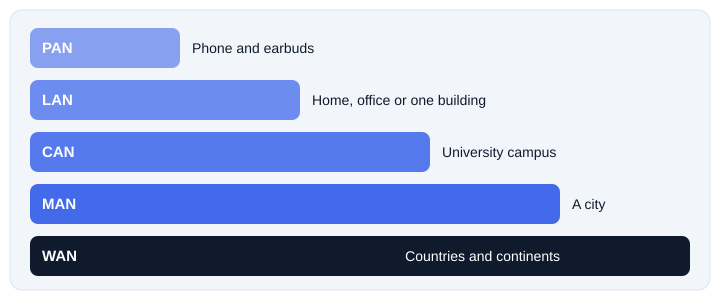

1. Networks by size
The most common way to classify a network is by the area it covers. A network around one person is tiny. A network linking countries is huge. The names below are common scopes, and real networks often overlap them.

2. PAN, LAN and WLAN
| Type | Meaning | Example |
|---|---|---|
| PAN | Personal Area Network. Devices around one person, usually over Bluetooth. | Phone connected to earbuds and a smartwatch |
| LAN | Local Area Network. Devices in a home, lab or building. | Computers and a printer joined by a switch |
| WLAN | Wireless LAN. A LAN that uses Wi-Fi through an access point. | Laptops and phones on home Wi-Fi |
Wireless gives you mobility and fewer cables. The trade offs are limited coverage, radio interference and the need to set up security properly.
3. CAN, MAN and WAN
| Type | Meaning | Example |
|---|---|---|
| CAN | Campus Area Network. Several LANs joined across a campus. | A university linking its library, labs and hostels |
| MAN | Metropolitan Area Network. Sites linked across a city. | A bank connecting its branches in one city |
| WAN | Wide Area Network. Networks linked over regions, countries or continents. | A company connecting offices in different countries |
WANs use many technologies: fiber links, leased lines, cellular networks and satellite. A useful way to remember the scale: a LAN is one building, a MAN is a city, a WAN is the world.
4. The Internet
The Internet is the largest network of networks. It joins the networks of homes, companies, governments and service providers. It is not one giant LAN. It works because all of these networks follow the same standard protocols.
5. SAN and VPN
These two are different from the size based types above.
| Type | What it is | Where you find it |
|---|---|---|
| SAN | Storage Area Network. A fast, specialised network that gives servers access to shared storage. | Data centers and large organisations |
| VPN | Virtual Private Network. A protected, encrypted connection across another network such as the Internet. | Staff working remotely and reaching the office network |
6. Wired and wireless
| Wired | Wireless | |
|---|---|---|
| Connection | Cable such as twisted pair, coaxial or fiber | Radio signals for the wireless link |
| Mobility | Limited by the cable | Move freely within range |
| Interference | Depends on cable and surroundings | Can be hit by other radio signals |
| Best for | Steady, high performance links | Phones, laptops and convenience |
7. Client server and peer to peer
Networks can also be described by how they share resources.
| Client server | Peer to peer | |
|---|---|---|
| Central server | Dedicated servers provide services | None needed, each device can share |
| Management | Centralised | Spread across devices |
| Size | Suits large networks | Suits small networks |
| Example | School with file and login servers | Two laptops sharing files directly |
8. Networks working together
You never use only one type. Picture a student on campus Wi-Fi opening a website:
A company works the same way. Each office has wired and wireless LANs, branch offices connect over a WAN, and remote staff join through a VPN.
9. Quick check
Which network connects a phone to earbuds?
A PAN.
What does the L in WLAN stand for, and what does the W add?
Local. The W means the LAN uses wireless links.
A university links its library and labs. Which type is that?
A CAN.
Is a VPN a size category like LAN or WAN?
No. It is a protected connection method that can run over other networks.
Which design uses dedicated servers to provide services?
Client server.